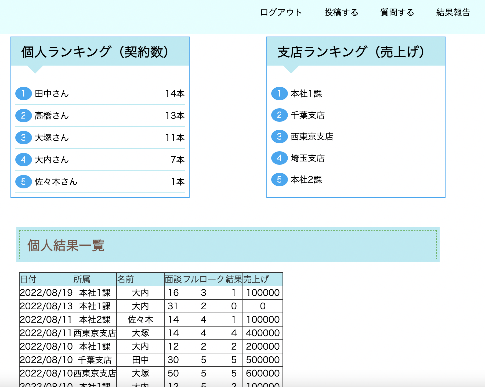

営業の教科書(営業職向け社内アプリ)

開発環境
Ruby / Ruby on Rails / MySQL / GitHub / Heroku / Visual Studio Code
-
概要
制作時間 230時間程度 URL https://eigyoukyoukasyo.herokuapp.com/ ID manabu.ouchi PASS mouchiotp0410 -
動作テスト
テスト用アカウント
mail hoge@hoge PASS manabu0410
OUTLINEアプリケーションの概要
オリジナルアプリケーションとして、営業が自分の持っているコアな営業技術などを社内でを共有出来るSNSを開発しました。(開発途中)
主な機能は、ユーザー登録機能、投稿(質問)機能、投稿(質問)に対するコメント(回答)機能、日々の営業結果表示、ランキング機能です。
ユーザー登録をし、トップページにアクセスすると、投稿一覧が表示され、ヘッダーのボタンから各投稿ができます。
投稿者であれば、投稿の詳細画面から編集・削除が可能で、ログインユーザーであればコメント(回答)出来ます。
投稿者の名前からその投稿者の詳細ページに移行し、その投稿者の結果一覧や、投稿一覧が見れます。
結果の一覧ページでは投稿された結果をもとに自動で計算され、ランキングが見れるようになています。
-
開発に至った経緯
営業職を長く続ける中で、どうやったら営業部の売り上げを上げていけるかを考える中でこのアプリの開発に至りました。
売るもの、場所によって変わってくるコアな営業技術や、情報などが共有、保存されていないことが多く、社員がその情報にアクセス出来れば、もっと社内の営業成績を伸ばしていけるのではないかと考えました。
そこで、結果や情報が全て管理できるアプリを開発したいと考えました。
-
開発で工夫したこと
営業技術を投稿した人がその様な結果を出しているかを見れるようにしました。
営業は言うは易し、行うは難しというところもあるので、実際にその技術を持ってどの様な結果を出しているかが大事だと思ったからです。
また、報告した結果によりランキングが計算され表示できる様にしました。
-
今後実装したいと思っていること
様々な数字を計算できる様にして、データ分析ができる様にしていきたいと思います。